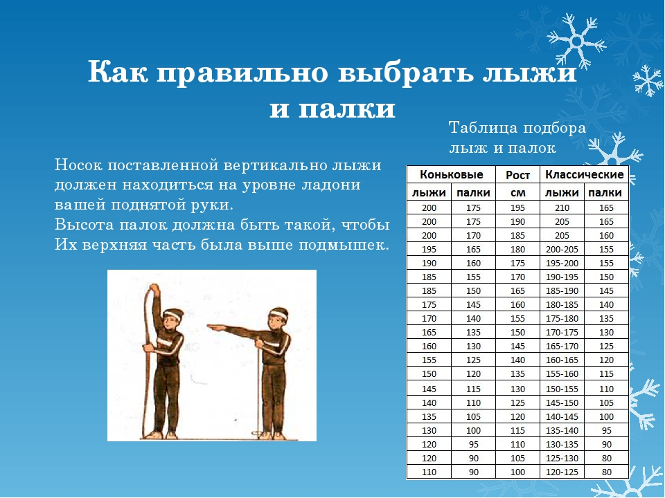

Как подобрать лыжи
Выбрать лыжи и палки, которые бы полностью подходили человеку, очень не просто. Особенно для тех, кто ранее с этим не сталкивался. Ведь существует множество факторов, которые влияют на выбор лыжного инвентаря: вес, рост, стиль катания и другие.
 Что касается параметров длины лыж, то они должны соответствовать Вашему росту, а жесткость – весу. Способы подбора лыж для конькового и классического стиля различны.
Лыжи для конькового хода должны быть на 10-15 см длиннее роста спортсмена. В классическом стиле – на 20-25 см.
Прогулочные лыжи следует выбирать на 15-25 см длиннее своего роста. При выборе прогулочных лыж людям с большим весом рекомендуется придерживаться верхней границы (20-25 см) диапазона, а с малым – нижней (15-20 см). Также не стоит забывать, что короткие лыжи лучше в управлении, но хуже в скольжении.
Для определения оптимальной жесткости беговых лыж необходимо встать на обе лыжи и подсовывать под колодки лыж сложенную вдвое газету (четыре тонких листа бумаги).
Газета должна проходить под грузовыми площадками лыж на расстоянии 30-40 см и должна прижиматься к полу при стоянии на одной лыже. Когда вы стоите на двух лыжах, зазор между полом и скользящими поверхностями под колодками лыж должен равняться для жестких лыж одному миллиметру, для мягких лыж — 0,6-0,8 мм. Для лыжных прогулок по мягкой лыжне лучше выбирать более мягкие лыжи и подсовывать под колодки лыж не сложенную вдвое газету, а сложенный вдвое лист бумаги.
Беговые палки необходимо подбирать в индивидуальном порядке для каждого человека и ориентироваться на его рост. По длине их нужно подбирать отдельно для «конька» и «классики». Длину палок зачастую необходимо определять таким образом. Для «конька» – с минусом в 15-20 сантиметров, а для «классики» – рост с минусом в 25-30 сантиметров. В тот момент, когда Вы стоите, коньковые» палки необходимо выбирать таким образом, чтобы они были выше плеча. «Классические» палки необходимо подбирать исходя из того, как человек стоит, чтобы они упирались в подмышки.